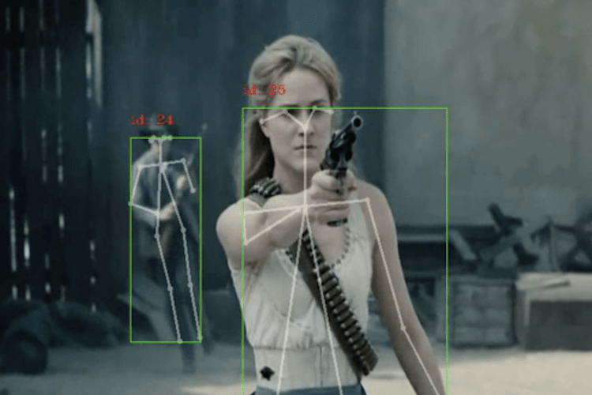
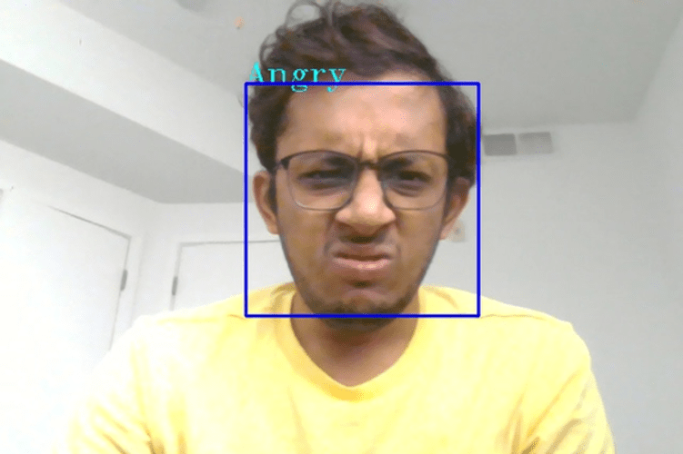
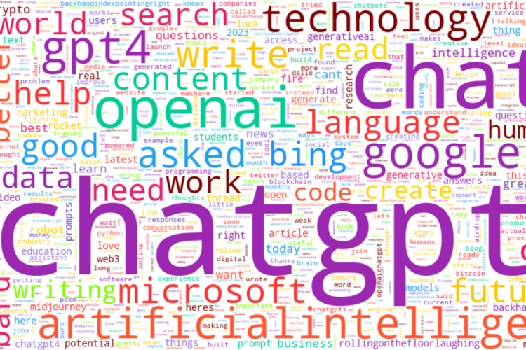
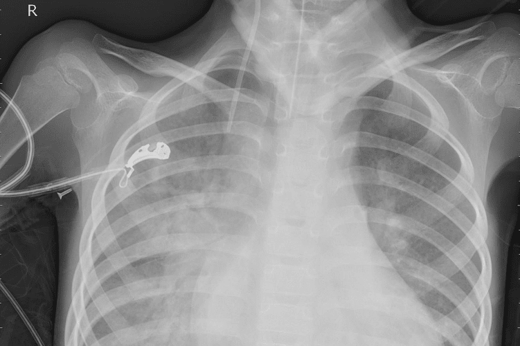

Projects
This section covers all the major projects I have worked on.
Detection of Armed Assailants in Hostage Situations
During my undergrad at Chaitanya Bharathi Institute of Technology (CBIT), I worked on an exciting project where our main objective was to detect armed assailants in hostage situations. With the alarming increase in gun violence incidents, our team aimed to develop a machine learning-based solution capable of real-time identification of armed assailants. This technology would enable authorities to react swiftly and save innocent lives.
For this problem, we used extensively explored state of the art object detection algorithms such as YOLO, SSD, Faster-RCNN. After thorough evaluation and experimentation, we decided to focus on YOLO as our primary model. Through fine-tuning and optimization techniques, we were able to achieve an impressive 72 mAP (mean Average Precision) score in accurately detecting weapons. This aspect was particularly crucial as our aim was to enhance security measures by identifying potential threats.
To provide a more comprehensive analysis, we integrated OpenPose into our system. OpenPose allowed us to accurately identify the positions of various body parts, such as hands and legs, of the detected individuals. By successfully connecting the detected weapons to the individuals holding them with high accuracy, we significantly improved the overall effectiveness of our solution.
The results and insights gained from our project were valuable contributions to the field. As a testament to our efforts, we published a research paper in the prestigious Institute of Electrical and Electronics Engineers (IEEE), detailing our experimentation methods and the results we obtained. Sharing our findings through this avenue enabled us to contribute to the scientific community and foster further advancements in the realm of object detection and public safety.
Facial Emotion Recognition
The task was to categorize each face based on the emotion shown in the facial expression, assigning it to one of seven categories: Angry (0), Disgust (1), Fear (2), Happy (3), Sad (4), Surprise (5), or Neutral (6). The training set comprised 28,709 examples, with a public test set containing 3,589 examples.
Two models were implemented for this task. Firstly, a custom Convolutional Neural Network (CNN) model was built from scratch and trained using the available data. Secondly, Transfer Learning was applied by utilizing a pre-trained Resnet50 model trained on the imagenet dataset to identify facial emotions. Since the dataset provided was grayscale, the grayscale layer was replicated three times to make the image appear as RGB input for the pre-trained model.


The CNN model obtained an accuracy of 59%, while the Resnet50 model achieved an accuracy of 76%. It is worth noting that the accuracy of the Resnet50 model could potentially be improved further with additional computational power and extensive training. This project showcases my ability to employ machine learning and deep learning techniques to tackle complex image recognition tasks.
ChatGPT Tweet Analysis
The objective of the project was to explore and analyze the usage of ChatGPT through sentiment analysis, visualization, and topic modeling techniques. The goal is to gain insights into how ChatGPT is used and what people say about it on Twitter.
The data pre-processing step involves removing null and duplicate values, eliminating stopwords, emails, and URLs, converting emojis into text representations for semantic preservation, normalizing text, and removing special characters, extra spaces, and usernames. Descriptive analysis is conducted using Word Cloud visualization to highlight the main words and topics used in the tweets during the specified time period.
Latent Dirichlet Allocation (LDA) topic modeling is implemented to separate the data into 10 topics, with grid search optimization to select the best parameters. Sentiment analysis is performed using Hugging Face models, indicating that the overall sentiment in the top 10,000 tweets is mostly neutral and positive, with minimal negative sentiment. Sentiment analysis graphs are plotted for each topic generated by LDA topic modeling, focusing on selected related topics.

Prediction of Pneumonia
I worked extensively on a medical image dataset sourced from Kaggle to accurately classify the presence of Pneumonia. The dataset served as a valuable resource for training and evaluating machine learning models in the field of medical image analysis.
To classify the presence of pneumonia, I employed deep learning techniques and trained convolutional neural network (CNN) models on the dataset. By leveraging the rich information captured in the medical images, the models learned to distinguish between normal lung images and those indicative of pneumonia. Through iterative model training, optimization, and validation, I strived to achieve high accuracy and robust performance in pneumonia classification.
The utilization of the Kaggle dataset facilitated a comprehensive investigation into pneumonia classification, allowing me to develop and fine-tune machine learning models that can aid in automated diagnosis and early detection of these conditions. The project showcased my proficiency in medical image analysis, deep learning, and the application of machine learning in the field of healthcare.
I also worked on detection of cancer in skin cells from images.